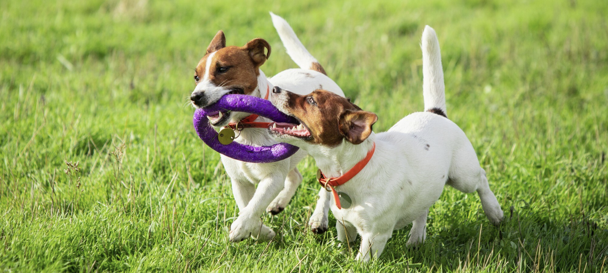

Sundhed
Kost, motion og metal sundhed.
Fra hvalp til voksen er sundhed en afgørende faktor, for at opretholde livskvalitet og trivsel.
Fra lydighed til leg. Udforsk træningens magi og styrk båndet til din hund.
Træning af hunde er en vigtig del af at opbygge et harmonisk forhold mellem mennesker og deres firbenede venner. Det handler ikke kun om at lære hunden grundlæggende kommandoer som "sit", "bliv" og "kom her", men også om at skabe tillid, respekt og en dyb forbindelse mellem hunden og dens ejer.
Først og fremmest er det vigtigt at forstå, at alle hunde er forskellige. Nogle hunde kan være mere legesyge og energiske, mens andre kan være mere tilbageholdende eller reserverede. Derfor er det afgørende at tilpasse træningen til den enkelte hunds temperament, personlighed og behov.
En af de vigtigste elementer i hundetræning er positiv forstærkning. Dette indebærer at belønne ønsket adfærd med ros, godbidder eller leg i stedet for at straffe uønsket adfærd. Ved at bruge positiv forstærkning opmuntrer du din hund til at gentage ønsket adfærd og styrker båndet mellem jer.
UKonsistens er også en afgørende faktorer i hundetræningen. Det er vigtigt at etablere klare regler og forventninger for din hund og derefter konsekvent håndhæve dem. Hvis du tillader din hund at gøre noget en dag, men ikke en anden, kan det forvirre den og gøre træningen mindre effektiv.
En anden vigtig faktor i hundetræning er tålmodighed. At lære en ny færdighed kan være udfordrende for din hund, så det er vigtigt at være tålmodig og give den tid og mulighed for at lære. Husk at fejl og tilbageslag er en naturlig del af træningsprocessen, så vær tålmodig og vedholdende.
Socialisering er også en vigtig del af hundetræning, særligt for hvalpe. At introducere din hvalp til forskellige mennesker, dyr, steder og situationer fra en tidlig alder kan hjælpe med at forebygge adfærdsproblemer senere i livet. Det kan også hjælpe din hvalp med at udvikle tillid og tryghed i forskellige miljøer.
Endelig er det vigtigt at huske, at træning af hunde fortsætter hele deres levetid. Selv når din hund har lært grundlæggende kommandoer, er det vigtigt at fortsætte med at træne og udfordre den mentalt og fysisk. Dette kan bl.a. være at lære nye tricks og færdigheder eller benytte sig af agility baner.
Vores erfarne trænere hjælper dig med træningen af alle hunde i alle aldre. Lige fra hvalpe til voksne. Lyder det som noget for dig og din hund kan du finde alle vores hold her.
Kost, motion og metal sundhed.
Fra hvalp til voksen er sundhed en afgørende faktor, for at opretholde livskvalitet og trivsel.
“Sit, dæk, bliv og gå”
Træning er nøglen til god adfærd. Med tålmodighed og de rigtige værktøjer, kan du opnå en vellykket hundetræning.
Golden Retriever er blandt de mest populære hunderacer. Den er glad, intelligent og en perfekt familiehund. Den er nem at træne og elsker at lege.